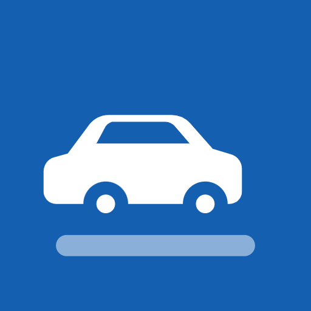

Símbolo · SVG
PWA 192px

PWA 512px
Cartel de estacionamiento
El símbolo es un cartel azul de estacionamiento con un auto minimalista «estacionado» en su lugar. Reconocible en señalización urbana y en tamaños chicos.